Swift and Kotlin generated shapes
14 shapes per SDK. Native SDKs compute the holes and write the SVG files; Chrome displays the results.
SwiftGenerated in a command-line process
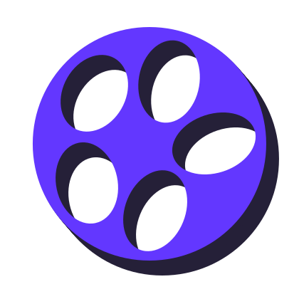
Perforated disc5 holes · seed 7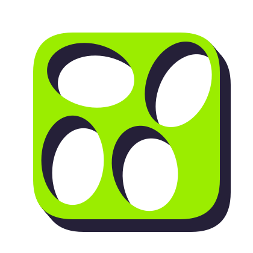
Round block4 holes · seed 7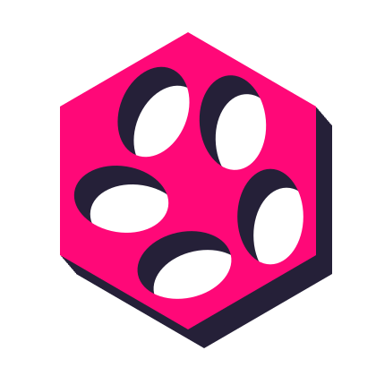
Hex slab5 holes · seed 7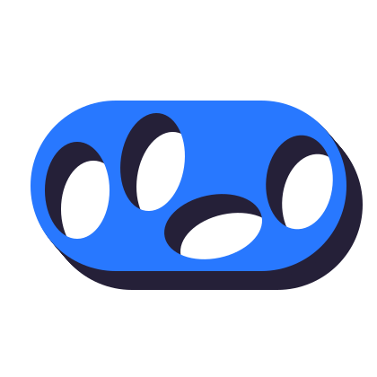
Capsule4 holes · seed 7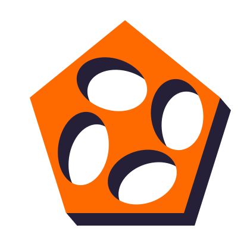
Cut prism4 holes · seed 7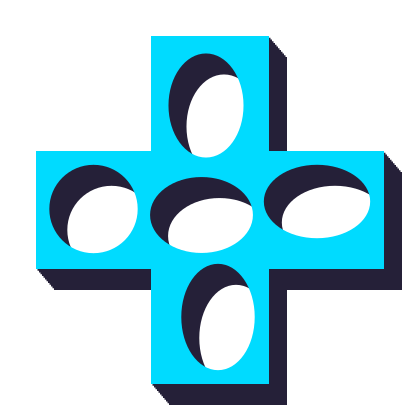
Cross block5 holes · seed 7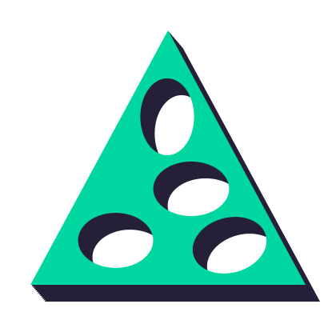
Triangle plate4 holes · seed 7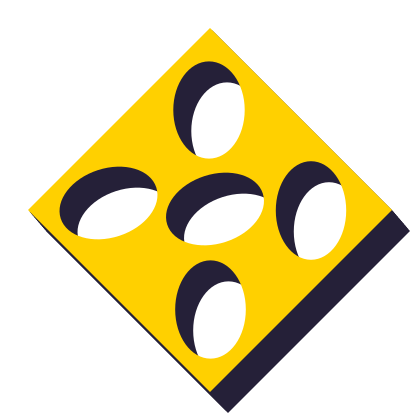
Diamond tile5 holes · seed 7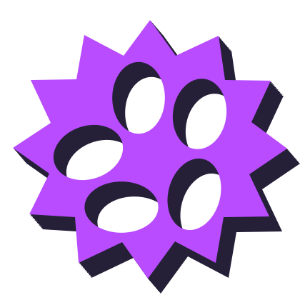
Sunburst slab5 holes · seed 7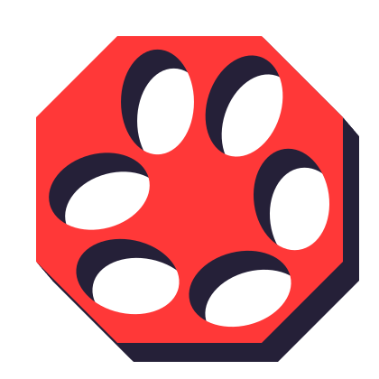
Octagon6 holes · seed 7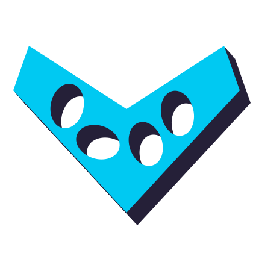
Bent chevron4 holes · seed 7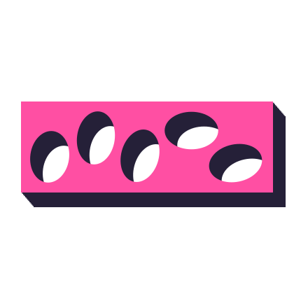
Long bar5 holes · seed 7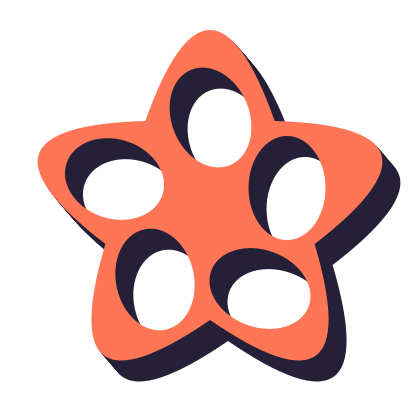
Five-point bloom5 holes · seed 7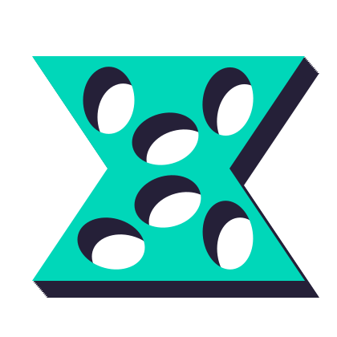
Bowtie slab6 holes · seed 7Kotlin JVMGenerated in a command-line process
Perforated disc5 holes · seed 7Round block4 holes · seed 7Hex slab5 holes · seed 7Capsule4 holes · seed 7Cut prism4 holes · seed 7Cross block5 holes · seed 7Triangle plate4 holes · seed 7Diamond tile5 holes · seed 7Sunburst slab5 holes · seed 7Octagon6 holes · seed 7Bent chevron4 holes · seed 7Long bar5 holes · seed 7Five-point bloom5 holes · seed 7Bowtie slab6 holes · seed 7